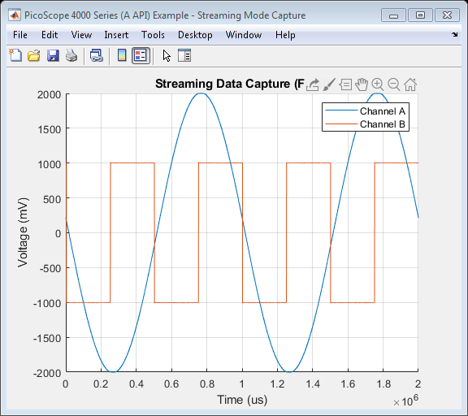

PicoScope 4000 Series (A API) Instrument Driver Oscilloscope Streaming Data Capture Example
This is an example of an instrument control session using a device object. The instrument control session comprises all the steps you are likely to take when communicating with your instrument.
These steps are:
- Create a device object
- Connect to the instrument
- Configure properties
- Invoke functions
- Disconnect from the instrument
To run the instrument control session, type the name of the file, PS4000A_ID_Streaming_Example, at the MATLAB command prompt.
The file, PS4000A_ID_STREAMING_EXAMPLE.M must be on your MATLAB PATH. For additional information on setting your MATLAB PATH, type 'help addpath' at the MATLAB command prompt.
Example: PS4000A_ID_Streaming_Example;
Description: Demonstrates how to call functions in order to capture data in streaming mode data from a PicoScope 4000 Series oscilloscope using the underlying (lib)ps4000a shared library API functions.
Note: Not all device and group object functions used in this example are compatible with the Test and Measurement Tool.
Copyright: © Pico Technology Limited 2014-2019. See LICENSE file for terms.
Contents
Suggested input test signals
This example was published using the following test signals:
- Channel A: 4 Vpp, 1 Hz sine wave
- Channel B: 2 Vpp, 2 Hz square wave
Clear command window
clc;
Load configuration information
PS4000aConfig;
Parameter definitions
Define any parameters that might be required throughout the script.
channelA = ps4000aEnuminfo.enPS4000AChannel.PS4000A_CHANNEL_A; channelB = ps4000aEnuminfo.enPS4000AChannel.PS4000A_CHANNEL_B;
Device connection
% Check if an Instrument session using the device object 'ps4000aDeviceObj' % is still open, and if so, disconnect if the User chooses 'Yes' when prompted. if (exist('ps4000aDeviceObj', 'var') && ps4000aDeviceObj.isvalid && strcmp(ps4000aDeviceObj.status, 'open')) openDevice = questionDialog(['Device object ps4000aDeviceObj has an open connection. ' ... 'Do you wish to close the connection and continue?'], ... 'Device Object Connection Open'); if (openDevice == PicoConstants.TRUE) % Close connection to device disconnect(ps4000aDeviceObj); delete(ps4000aDeviceObj); else % Exit script if User return; end end % Create device - specify serial number if required % Specify serial number as 2nd argument if required. ps4000aDeviceObj = icdevice('picotech_ps4000a_generic', ''); % Connect device connect(ps4000aDeviceObj);
PicoScope 4000 Series (A API) MATLAB Instrument Driver
Copyright © 2014-2019 Pico Technology Ltd. All rights reserved.
Instrument Device Object Using Driver : picotech_ps4000a_generic.mdd
Instrument Information
Type: Oscilloscope
Manufacturer: Pico Technology Ltd.
Model: PicoScope 4000 Series (A API)
Driver Information
DriverType: MATLAB generic
DriverName: picotech_ps4000a_generic.mdd
DriverVersion: 1.2.16.4
Communication State
Status: closed
Number of units found: 1
Serial number(s): ZZ990/003
Opening PicoScope 4000 Series (A API) device...
Instrument Device Object Using Driver : picotech_ps4000a_generic.mdd
Instrument Information
Type: Oscilloscope
Manufacturer: Pico Technology Ltd.
Model: PicoScope 4000 Series (A API)
Driver Information
DriverType: MATLAB generic
DriverName: picotech_ps4000a_generic.mdd
DriverVersion: 1.2.16.4
Communication State
Status: open
Setting Device Parameters...
Default Channel Setup:-
-----------------------
Channel A:-
Enabled: True
Coupling: DC
Range: 5V
Analog Offset: 0.0V
Channel B:-
Enabled: True
Coupling: DC
Range: 5V
Analog Offset: 0.0V
Channel C:-
Enabled: True
Coupling: DC
Range: 5V
Analog Offset: 0.0V
Channel D:-
Enabled: True
Coupling: DC
Range: 5V
Analog Offset: 0.0V
Channel E:-
Enabled: True
Coupling: DC
Range: 5V
Analog Offset: 0.0V
Channel F:-
Enabled: True
Coupling: DC
Range: 5V
Analog Offset: 0.0V
Channel G:-
Enabled: True
Coupling: DC
Range: 5V
Analog Offset: 0.0V
Channel H:-
Enabled: True
Coupling: DC
Range: 5V
Analog Offset: 0.0V
Turning off trigger...
Default Block mode parameters:-
Timebase index : 79
Time Interval: 1000.0 ns
Number of pre-trigger samples: 0
Number of post-trigger samples: 1000000
Total number of samples: 1000000
Default Streaming mode parameters:-
Streaming interval: 1.00e-06 s
Streaming auto stop: 1
Default Signal generator parameters:-
Start frequency: 1000 Hz
Stop frequency: 1000 Hz
Offset voltage: 0 mV
Peak to Peak voltage: 2000 mV
Initialization complete.
Connected to PicoScope 4000 Series (A API) device:-
Instrument Model: 4824
Batch/Serial Number: ZZ990/003
Analog Channels: 8
Bandwidth: 20 MHz
Buffer memory: 256 MS
Maximum sampling rate: 80 MS/s
Signal Generator Type: Arbitrary Waveform Generator
Display unit information
[infoStatus, unitInfo] = invoke(ps4000aDeviceObj, 'getUnitInfo'); disp('Device information:-') disp(unitInfo);
Device information:-
'Driver version: 2.1.0.687'
'USB version: 3.0'
'Hardware version: 1'
'Variant: 4824'
'Batch & Serial: ZZ990/003'
'Cal. Date: 19Dec13'
'Kernel version: 1.2'
'Digital HW version: 1'
'Analogue HW version: 1'
'Firmware 1: 1.7.5.0'
'Firmware 2: 1.0.11.0'
Channel setup
All channels are enabled by default - switch off all except Channels A and B.
If using the PicoScope 4444, select the appropriate range value for the probe connected to an input channel using the enumeration values available from the ps4000aEnuminfo.enPicoConnectProbeRange substructure.
Channel settings are changed as shown below:
% Channel A channelSettings(1).enabled = PicoConstants.TRUE; channelSettings(1).coupling = ps4000aEnuminfo.enPS4000ACoupling.PS4000A_DC; channelSettings(1).range = ps4000aEnuminfo.enPS4000ARange.PS4000A_2V; channelSettings(1).analogueOffset = 0.0; % Channel B channelSettings(2).enabled = PicoConstants.TRUE; channelSettings(2).coupling = ps4000aEnuminfo.enPS4000ACoupling.PS4000A_DC; channelSettings(2).range = ps4000aEnuminfo.enPS4000ARange.PS4000A_2V; channelSettings(2).analogueOffset = 0.0; if (ps4000aDeviceObj.channelCount == PicoConstants.QUAD_SCOPE || ... ps4000aDeviceObj.channelCount == PicoConstants.OCTO_SCOPE) % Channel C channelSettings(3).enabled = PicoConstants.FALSE; channelSettings(3).coupling = ps4000aEnuminfo.enPS4000ACoupling.PS4000A_DC; channelSettings(3).range = ps4000aEnuminfo.enPS4000ARange.PS4000A_2V; channelSettings(3).analogueOffset = 0.0; % Channel D channelSettings(4).enabled = PicoConstants.FALSE; channelSettings(4).coupling = ps4000aEnuminfo.enPS4000ACoupling.PS4000A_DC; channelSettings(4).range = ps4000aEnuminfo.enPS4000ARange.PS4000A_2V; channelSettings(4).analogueOffset = 0.0; end % PicoScope 4824 if (ps4000aDeviceObj.channelCount == PicoConstants.OCTO_SCOPE) % Channel E channelSettings(5).enabled = PicoConstants.FALSE; channelSettings(5).coupling = ps4000aEnuminfo.enPS4000ACoupling.PS4000A_DC; channelSettings(5).range = ps4000aEnuminfo.enPS4000ARange.PS4000A_2V; channelSettings(5).analogueOffset = 0.0; % Channel F channelSettings(6).enabled = PicoConstants.FALSE; channelSettings(6).coupling = ps4000aEnuminfo.enPS4000ACoupling.PS4000A_DC; channelSettings(6).range = ps4000aEnuminfo.enPS4000ARange.PS4000A_2V; channelSettings(6).analogueOffset = 0.0; % Channel G channelSettings(7).enabled = PicoConstants.FALSE; channelSettings(7).coupling = ps4000aEnuminfo.enPS4000ACoupling.PS4000A_DC; channelSettings(7).range = ps4000aEnuminfo.enPS4000ARange.PS4000A_2V; channelSettings(7).analogueOffset = 0.0; % Channel H channelSettings(8).enabled = PicoConstants.FALSE; channelSettings(8).coupling = ps4000aEnuminfo.enPS4000ACoupling.PS4000A_DC; channelSettings(8).range = ps4000aEnuminfo.enPS4000ARange.PS4000A_2V; channelSettings(8).analogueOffset = 0.0; end % Obtain the number of analogue channels on the device from the driver numChannels = get(ps4000aDeviceObj, 'channelCount'); for ch = 1:numChannels status.setChannelStatus(ch) = invoke(ps4000aDeviceObj, 'ps4000aSetChannel', ... (ch - 1), channelSettings(ch).enabled, ... channelSettings(ch).coupling, channelSettings(ch).range, ... channelSettings(ch).analogueOffset); end % Obtain the range and units for each enabled channel. For the PicoScope % 4824, this will be in millivolts. [chARange, chAUnits] = invoke(ps4000aDeviceObj, 'getChannelInputRangeAndUnits', ps4000aEnuminfo.enPS4000AChannel.PS4000A_CHANNEL_A); [chBRange, chBUnits] = invoke(ps4000aDeviceObj, 'getChannelInputRangeAndUnits', ps4000aEnuminfo.enPS4000AChannel.PS4000A_CHANNEL_B); % Obtain the maximum Analogue Digital Converter Count value from the driver % - this is used for scaling values returned from the driver when data is % collected. maxADCCount = double(get(ps4000aDeviceObj, 'maxADCValue'));
Trigger setup
Turn off the trigger.
If a trigger is set and the autoStop property in the driver's Streaming group object is set to '1', the device will stop collecting data once the number of post trigger samples have been collected.
% Trigger properties and functions are located in the Instrument % Driver's Trigger group. triggerGroupObj = get(ps4000aDeviceObj, 'Trigger'); triggerGroupObj = triggerGroupObj(1); [status.setTriggerOff] = invoke(triggerGroupObj, 'setTriggerOff');
Set data buffers
Data buffers for Channel A and B - buffers should be set with the (lib)ps400a shared library, and these MUST be passed with application buffers to the wrapper shared library. This will ensure that data is correctly copied from the shared library buffers for later processing.
overviewBufferSize = 250000; % Size of the buffer(s) to collect data from the driver's buffer(s). segmentIndex = 0; ratioMode = ps4000aEnuminfo.enPS4000ARatioMode.PS4000A_RATIO_MODE_NONE; % Buffers to be passed to the driver pDriverBufferChA = libpointer('int16Ptr', zeros(overviewBufferSize, 1, 'int16')); pDriverBufferChB = libpointer('int16Ptr', zeros(overviewBufferSize, 1, 'int16')); status.setDataBufferChA = invoke(ps4000aDeviceObj, 'ps4000aSetDataBuffer', ... channelA, pDriverBufferChA, overviewBufferSize, segmentIndex, ratioMode); status.setDataBufferChB = invoke(ps4000aDeviceObj, 'ps4000aSetDataBuffer', ... channelB, pDriverBufferChB, overviewBufferSize, segmentIndex, ratioMode); % Application Buffers - these are for temporarily copying data from the driver. pAppBufferChA = libpointer('int16Ptr', zeros(overviewBufferSize, 1)); pAppBufferChB = libpointer('int16Ptr', zeros(overviewBufferSize, 1)); % Streaming properties and functions are located in the Instrument % Driver's Streaming group. streamingGroupObj = get(ps4000aDeviceObj, 'Streaming'); streamingGroupObj = streamingGroupObj(1); % Register application buffer and driver buffers (with the wrapper driver). status.setAppAndDriverBuffersA = invoke(streamingGroupObj, 'setAppAndDriverBuffers', channelA, ... pAppBufferChA, pDriverBufferChA, overviewBufferSize); status.setAppAndDriverBuffersB = invoke(streamingGroupObj, 'setAppAndDriverBuffers', channelB, ... pAppBufferChB, pDriverBufferChB, overviewBufferSize);
Start streaming and collect data
Use default value for streaming interval which is 1e-6 for 1 MS/s Collect data for 1 second with auto stop - maximum array size will depend on PC's resources - type 'memory' at MATLAB command prompt for further information.
To change the sample interval set the streamingInterval property of the Streaming group object. The call to ps4000aRunStreaming will output the actual sampling interval used by the driver.
% For 200 kS/s, specify 5 us %set(streamingGroupObj, 'streamingInterval', 5e-6); % For 10 MS/s, specify 100 ns %set(streamingGroupObj, 'streamingInterval', 100e-9); % Set the number of pre- and post-trigger samples % If no trigger is set 'numPreTriggerSamples' is ignored set(ps4000aDeviceObj, 'numPreTriggerSamples', 0); set(ps4000aDeviceObj, 'numPostTriggerSamples', 2000000); % The autoStop parameter can be set to false (0). %set(streamingGroupObj, 'autoStop', PicoConstants.FALSE); % Set other streaming parameters downSampleRatio = 1; downSampleRatioMode = ps4000aEnuminfo.enPS4000ARatioMode.PS4000A_RATIO_MODE_NONE; % Defined buffers to store data collected from the channels. % If capturing data without using the autoStop flag, or if using a trigger % with the autoStop flag, allocate sufficient space (1.5 times the size is % shown below) to allow for pre-trigger data. Pre-allocating the array is % more efficient than using vertcat to combine data. maxSamples = get(ps4000aDeviceObj, 'numPreTriggerSamples') + ... get(ps4000aDeviceObj, 'numPostTriggerSamples'); % Take into account the downsampling ratio mode - required if collecting % data without a trigger and using the autoStop flag. % finalBufferLength = round(1.5 * maxSamples / downSampleRatio); pBufferChAFinal = libpointer('int16Ptr', zeros(maxSamples, 1, 'int16')); pBufferChBFinal = libpointer('int16Ptr', zeros(maxSamples, 1, 'int16')); % Prompt User to indicate if they wish to plot live streaming data. plotLiveData = questionDialog('Plot live streaming data?', 'Streaming Data Plot'); if (plotLiveData == PicoConstants.TRUE) disp('Live streaming data collection with second plot on completion.'); else disp('Streaming data plot on completion.'); end % Start streaming data collection. [status.runStreaming, actualSampleInterval, sampleIntervalTimeUnitsStr] = ... invoke(streamingGroupObj, 'ps4000aRunStreaming', downSampleRatio, ... downSampleRatioMode, overviewBufferSize); disp('Streaming data collection...'); fprintf('Click the STOP button to stop capture or wait for auto stop if enabled.\n\n') % Variables to be used when collecting the data isAutoStopSet = PicoConstants.FALSE; newSamples = 0; % Number of new samples returned from the driver. previousTotal = 0; % The previous total number of samples. totalSamples = 0; % Total number of samples captured by the device. startIndex = 0; % Start index of data in the buffer returned (zero-based). hasTriggered = 0; % To indicate if trigger event has occurred. triggeredAtIndex = 0; % The index in the overall buffer where the trigger occurred (zero-based). status.getStreamingLatestValues = PicoStatus.PICO_OK; % OK % Display a 'Stop' button. [stopFig.h, stopFig.h] = stopButton(); flag = 1; % Use flag variable to indicate if the stop button has been clicked (0). setappdata(gcf, 'run', flag); % Plot Properties - these are for displaying data as it is collected. In % this example, data is displayed in millivolts. For other probes, % including when using PicoConnect 442 or current probes with the PicoScope % 4444, use the appropriate units for the vertical axes. if (plotLiveData == PicoConstants.TRUE) % Plot on a single figure figure1 = figure('Name','PicoScope 4000 Series (A API) Example - Streaming Mode Capture', ... 'NumberTitle','off'); axes1 = axes('Parent', figure1); % Estimate x-axis limit to try and avoid using too much CPU resources % when drawing - use max voltage range selected if plotting multiple % channels on the same graph. xlim(axes1, [0 (actualSampleInterval * maxSamples)]); yRange = max(chARange, chBRange); ylim(axes1,[(-1 * yRange) yRange]); hold(axes1,'on'); grid(axes1, 'on'); title(axes1, 'Live Streaming Data Capture'); xLabelStr = strcat('Time (', sampleIntervalTimeUnitsStr, ')'); xlabel(axes1, xLabelStr); ylabel(axes1, getVerticalAxisLabel(chAUnits)); end % Collect samples as long as the autoStop flag has not been set or the call % to getStreamingLatestValues does not return an error code (check for STOP % button push inside loop). while (isAutoStopSet == PicoConstants.FALSE && status.getStreamingLatestValues == PicoStatus.PICO_OK) ready = PicoConstants.FALSE; while (ready == PicoConstants.FALSE) status.getStreamingLatestValues = invoke(streamingGroupObj, 'getStreamingLatestValues'); ready = invoke(streamingGroupObj, 'isReady'); % Give option to abort from here flag = getappdata(gcf, 'run'); drawnow; if (flag == 0) disp('STOP button clicked - aborting data collection.') break; end if (plotLiveData == PicoConstants.TRUE) drawnow; end end % Check for new data values [newSamples, startIndex] = invoke(streamingGroupObj, 'availableData'); if (newSamples > 0) % Check if the scope has triggered [triggered, triggeredAt] = invoke(streamingGroupObj, 'isTriggerReady'); if (triggered == PicoConstants.TRUE) % Adjust trigger position as MATLAB does not use zero-based % indexing. bufferTriggerPosition = triggeredAt + 1; fprintf('Triggered - index in buffer: %d\n', bufferTriggerPosition); hasTriggered = triggered; % Set the total number of samples at which the device % triggered. triggeredAtIndex = totalSamples + bufferTriggerPosition; end previousTotal = totalSamples; totalSamples = totalSamples + newSamples; % Printing to console can slow down acquisition - use for % demonstration. fprintf('Collected %d samples, startIndex: %d total: %d.\n', newSamples, startIndex, totalSamples); % Position indices of data in the buffer(s). firstValuePosn = startIndex + 1; lastValuePosn = startIndex + newSamples; % Convert data values from the application buffer(s) - in this % example bufferChAmV = adc2mv(pAppBufferChA.Value(firstValuePosn:lastValuePosn), chARange, maxADCCount); bufferChBmV = adc2mv(pAppBufferChB.Value(firstValuePosn:lastValuePosn), chBRange, maxADCCount); % Process collected data further if required - this example plots % the data if the User has selected 'Yes' at the prompt. % Copy data into the final buffer(s). pBufferChAFinal.Value(previousTotal + 1:totalSamples) = bufferChAmV; pBufferChBFinal.Value(previousTotal + 1:totalSamples) = bufferChBmV; if (plotLiveData == PicoConstants.TRUE) % Time axis % Multiply by ratio mode as samples get reduced. time = (double(actualSampleInterval) * double(downSampleRatio)) * (previousTotal:(totalSamples - 1)); plot(time, bufferChAmV, time, bufferChBmV); end % Clear variables. clear bufferChAmV; clear bufferChBmV; clear firstValuePosn; clear lastValuePosn; clear startIndex; clear triggered; clear triggerAt; end % Check if auto stop has occurred. isAutoStopSet = invoke(streamingGroupObj, 'autoStopped'); if (isAutoStopSet == PicoConstants.TRUE) disp('AutoStop: TRUE - exiting loop.'); break; end % Check if 'STOP' button pressed. flag = getappdata(gcf, 'run'); drawnow; if (flag == 0) disp('STOP button clicked - aborting data collection.') break; end end % Close the STOP button window if (exist('stopFig', 'var')) close('Stop Button'); clear stopFig; end if (plotLiveData == PicoConstants.TRUE) drawnow; end if (hasTriggered == PicoConstants.TRUE) fprintf('Triggered at overall index: %d\n', triggeredAtIndex); end if (plotLiveData == PicoConstants.TRUE) % Take hold off the current figure hold off; movegui(figure1, 'west'); end fprintf('\n');
Streaming data plot on completion. ps4000aRunStreaming:- Sample interval 1 us Streaming data collection... Click the STOP button to stop capture or wait for auto stop if enabled. Collected 69632 samples, startIndex: 0 total: 69632. Collected 69632 samples, startIndex: 69632 total: 139264. Collected 69632 samples, startIndex: 139264 total: 208896. Collected 41104 samples, startIndex: 208896 total: 250000. Collected 28528 samples, startIndex: 0 total: 278528. Collected 69632 samples, startIndex: 28528 total: 348160. Collected 69632 samples, startIndex: 98160 total: 417792. Collected 69632 samples, startIndex: 167792 total: 487424. Collected 12576 samples, startIndex: 237424 total: 500000. Collected 57056 samples, startIndex: 0 total: 557056. Collected 69632 samples, startIndex: 57056 total: 626688. Collected 69632 samples, startIndex: 126688 total: 696320. Collected 53680 samples, startIndex: 196320 total: 750000. Collected 15952 samples, startIndex: 0 total: 765952. Collected 69632 samples, startIndex: 15952 total: 835584. Collected 69632 samples, startIndex: 85584 total: 905216. Collected 69632 samples, startIndex: 155216 total: 974848. Collected 25152 samples, startIndex: 224848 total: 1000000. Collected 44480 samples, startIndex: 0 total: 1044480. Collected 69632 samples, startIndex: 44480 total: 1114112. Collected 69632 samples, startIndex: 114112 total: 1183744. Collected 66256 samples, startIndex: 183744 total: 1250000. Collected 3376 samples, startIndex: 0 total: 1253376. Collected 69632 samples, startIndex: 3376 total: 1323008. Collected 69632 samples, startIndex: 73008 total: 1392640. Collected 69632 samples, startIndex: 142640 total: 1462272. Collected 37728 samples, startIndex: 212272 total: 1500000. Collected 31904 samples, startIndex: 0 total: 1531904. Collected 69632 samples, startIndex: 31904 total: 1601536. Collected 69632 samples, startIndex: 101536 total: 1671168. Collected 69632 samples, startIndex: 171168 total: 1740800. Collected 9200 samples, startIndex: 240800 total: 1750000. Collected 60432 samples, startIndex: 0 total: 1810432. Collected 69632 samples, startIndex: 60432 total: 1880064. Collected 69632 samples, startIndex: 130064 total: 1949696. Collected 50304 samples, startIndex: 199696 total: 2000000. AutoStop: TRUE - exiting loop.
Stop the device
This function should be called regardless of whether the autoStop property is enabled or not.
status.stop = invoke(ps4000aDeviceObj, 'ps4000aStop');
Find the number of samples
This is the number of samples held in the driver itself. The actual number of samples collected when using a trigger is likely to be greater.
[status.noOfStreamingValues, numStreamingValues] = invoke(streamingGroupObj, 'ps4000aNoOfStreamingValues'); fprintf('Number of samples available from the driver: %u.\n\n', numStreamingValues);
Number of samples available from the driver: 2000000.
Process data
Process all data if required
% Reduce size of arrays if required. if (totalSamples < maxSamples) pBufferChAFinal.Value(totalSamples + 1:end) = []; pBufferChBFinal.Value(totalSamples + 1:end) = []; end % Retrieve data for the Channels. channelAFinal = pBufferChAFinal.Value(); channelBFinal = pBufferChBFinal.Value(); % Plot the total data collected on another figure. finalFigure = figure('Name','PicoScope 4000 Series (A API) Example - Streaming Mode Capture', ... 'NumberTitle','off'); finalFigureAxes = axes('Parent', finalFigure); hold(finalFigureAxes, 'on'); title('Streaming Data Capture (Final)'); xLabelStr = strcat('Time (', sampleIntervalTimeUnitsStr, ')'); xlabel(finalFigureAxes, xLabelStr); ylabel(finalFigureAxes, 'Voltage (mV)'); % Find the maximum voltage range. maxYRange = max(chARange, chBRange); ylim(finalFigureAxes,[(-1 * maxYRange) maxYRange]); % Calculated values for time axis, then plot. timeAxis = (double(actualSampleInterval) * double(downSampleRatio)) * (0:length(channelAFinal) - 1); plot(finalFigureAxes, timeAxis, channelAFinal, timeAxis, channelBFinal); grid(finalFigureAxes, 'on'); legend(finalFigureAxes, 'Channel A', 'Channel B'); hold(finalFigureAxes, 'off'); movegui(finalFigureAxes, 'east');
Disconnect device
Disconnect device object from hardware.
disconnect(ps4000aDeviceObj); delete(ps4000aDeviceObj);
Connection to PicoScope 4824 with serial number ZZ990/003 closed successfully. Libraries unloaded successfully.